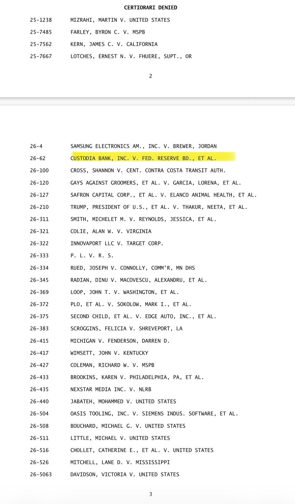
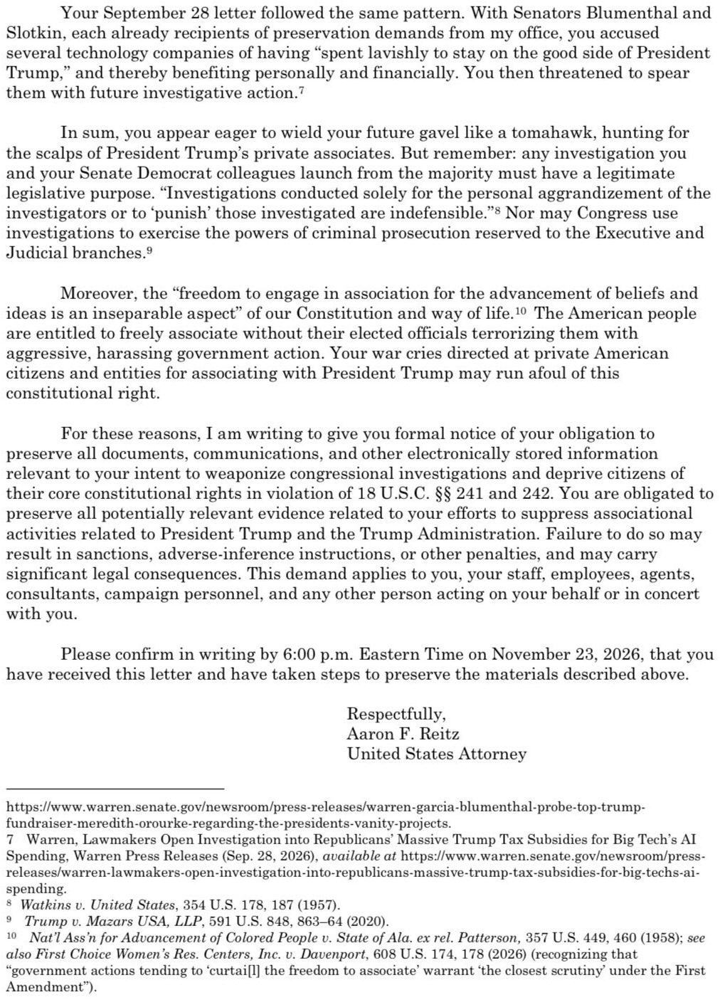
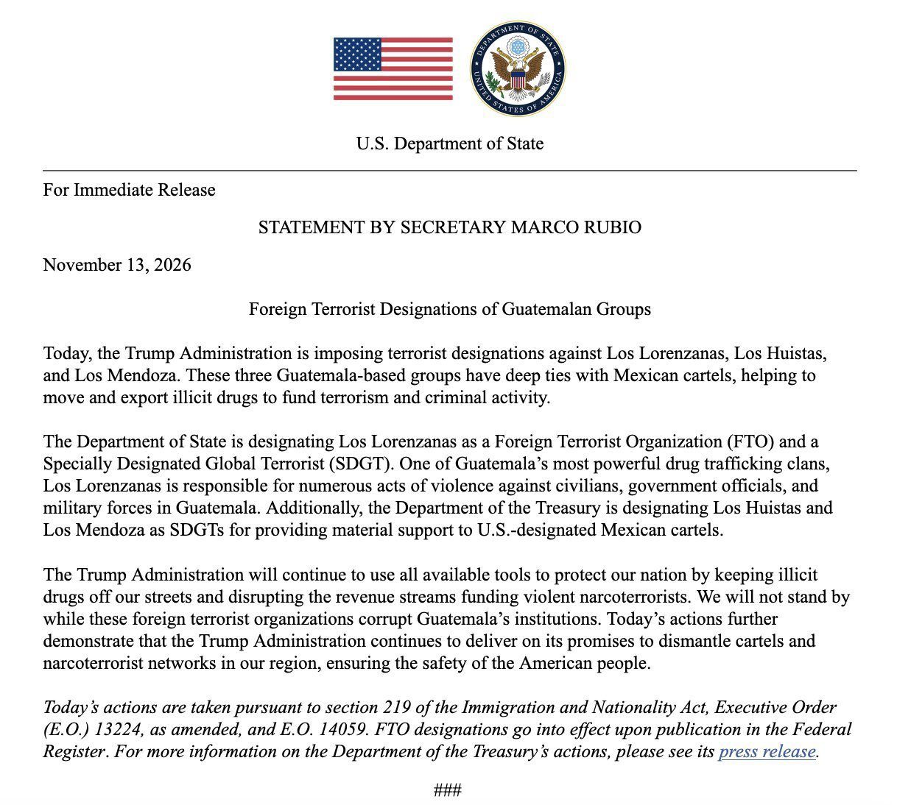
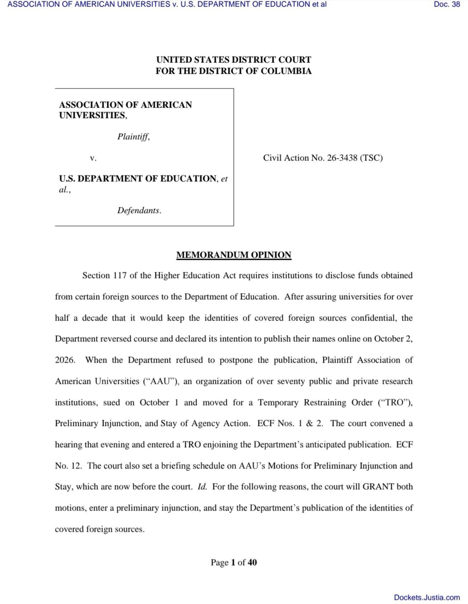
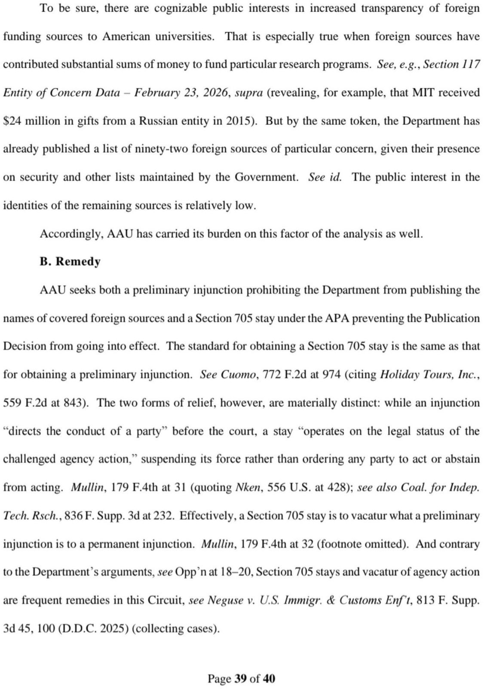
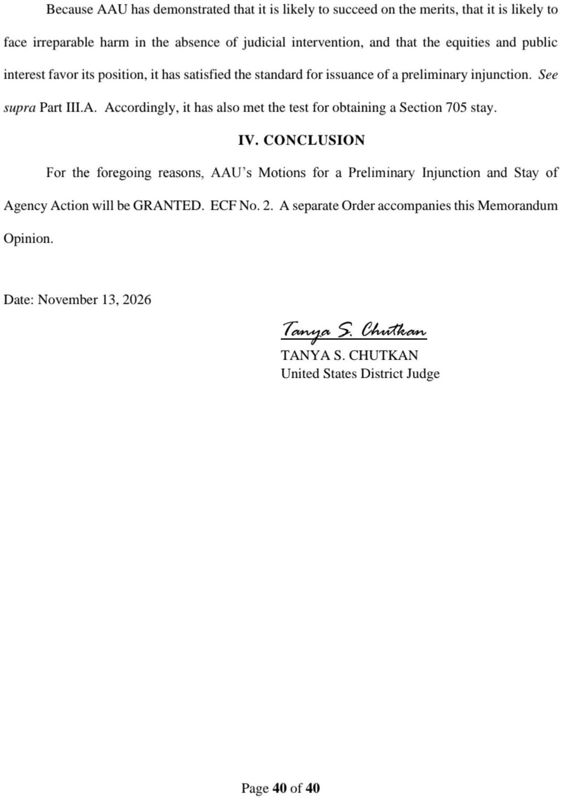

The nationwide ground stop lifted at 8:15pm ET.
Here’s a breakdown of today’s timeline:
- At 3:36 p.m. ET, @FAANews experienced telecommunications issues at facilities & TRACONs across the country
- The FAA issued a ground stop out of an abundance of caution while 3,500+ planes were in the air
- Pilots and air traffic controllers followed established procedures to safely land the aircraft, bringing the number in the airspace down to under 400 as of 8pm ET
- The FAA confirms they did not lose all radar or telecom, and exceptions were made to allow critical medevac, life-saving cargo, and law enforcement flights to continue operating
Some Background on Correspondent Banking Since the 14th century in Europe, banks in different cities have maintained correspondent relationships. These relationships facilitate transferring funds between banks by having two parties hold deposits with each other, then crediting/debiting those accounts. Rather than transporting physical currency, the inter-bank money movement is done with ledger updates.
The Federal Reserve & Correspondent Banking Correspondent banking had existed in the US since the 1800s and evolved into a complex web of private relationships by the 1900s. But in 1913, the establishment of the Federal Reserve formalized a new public national correspondent banking layer. Nationally chartered banks had to become members of the Federal Reserve System by holding deposits at their regional Federal Reserve Bank, who would then net their positions across regions through a centralized Fed accounting mechanism. Interbank transfers within or across regions could now easily be done with ledger updates.
Inadvertently, the newly created Federal Reserve aided in abstracting money movement away from the physical transfer of currency to a mathematical update of account balances. Over 100 years later, this same system still exists, except the paper ledgers have gone digital, abstracting money entirely away from physical notes into digital information.
The Legacy Baggage of Correspondent Banking Modern software can initiate payments instantly, but the actual cross-border money movement still depends on prefunded accounts, intermediary banks, opaque FX spreads, and delayed settlement across chains of banking relationships.
This has created a mismatch: digital front ends running on top of an old correspondent banking architecture.
Stablecoins are poised to gradually displace that legacy architecture in three key places: liquidity, routing, and access:
Liquidity lockup. The size of transfers a bank can support through a correspondent account depends on how much liquidity it has prefunded there. This creates a costly tradeoff for banks. They’d like to support large transfer sizes for their customers, but prefunded, idle liquidity is unproductive. At best, the liquidity sitting at the Fed earns IORB (Interest on Reserve balances, currently ~3.65%). Balances sitting at an arbitrary commercial bank typically earn a much lower interest rate decided by the bank and fees from acting as a correspondent intermediary.
Additionally, a bank may have many correspondent relationships that it needs to maintain. This is a significant amount of liquidity spread across many accounts in different banks, estimated at $4–10 trillion across the entire industry.
Layers of intermediaries & fees. No bank can realistically maintain a correspondent relationship with every other bank, so a transfer may take several hops through a chain of correspondent relationships. For international transfers, this chain is even longer. Every additional correspondent relationship that a transfer passes through introduces more fees and latency. While fees on domestic payments have been squeezed, international payments remain a lucrative source of revenue for banks. Predatory FX conversion rates allow banks to discreetly extract more fees on top of the normal wire and correspondent fees.
Support for the long tail. Since the early 2010s, large international banks have been "de-risking": terminating correspondent relationships with the long tail of regional banks in smaller, high-risk markets. The trend was triggered by a wave of multi-billion dollar enforcement actions for sanctions/AML violations, such as those against HSBC and BNP Paribas. Regions like the Caribbean, Eastern Europe, Africa, and the Pacific Islands have local banks that depend on a small number of correspondent relationships for access to the global financial system, but have been hit especially hard by ‘de-risking’. The World Bank has documented this trend in detail, attributing the cause to the economics behind maintaining these relationships becoming unattractive. The modest fee revenue on low payment volume is not worth the high fixed compliance costs and possibly massive AML/sanctions repercussions.
Stablecoins Fix These Problems Stablecoins make liquidity more reusable across corridors. Stablecoins reduce dependence on chains of intermediary banks. Stablecoins can make long-tail corridors economical again by separating payment access from the need to maintain a full correspondent banking relationship in every market.
These benefits are structural, they exist because stables are digitally native settlement assets rather than claims moved through chains of bank relationships. Stablecoins are built on permissionless networks where any two financial institutions can spin up wallets and settle instantly + directly. This avoids the hassle of maintaining a correspondent relationship and avoids the friction introduced by routing through a chain of intermediaries.
A financial institution supporting transfers with stablecoins will need to maintain a stablecoin balance to support all of its customers, currencies, and payout corridors. However, this prefunded balance of stables collapses into one balance rather than split across many correspondent accounts around the world. So stablecoins don't totally erase the need for prefunding, but they dramatically reduce it.
An Example USD > JPY Transfer Consider an international transfer from a manufacturer using Topeka Bank in Kansas to one of its suppliers who banks with MUFG Bank in Japan. In the correspondent banking system, this transfer would jump through a series of correspondent relationships from Topeka Bank to an international bank that has a correspondent relationship directly with MUFG Bank in Japan. Each intermediary takes a fee from the transfer, and the international bank likely quotes a poor USD/JPY rate that conceals a larger fee.
In a financial system built on stablecoin rails, Topeka Bank could directly send USDC to MUFG Bank’s crypto address. MUFG Bank could swap that USDC for a yen stablecoin, and then offramp it to fiat yen.
Eventually, MUFG may not even need to offramp the yen stablecoin and its customers will just be able to spend it.
Compliance, KYC, and AML laws will add friction and some additional complexity to these international relationships in comparison to the given example, but the stablecoin rails still enable massive efficiencies in contrast to the status quo. At minimum, opening payment corridors to countries hit hard by ‘de-risking’ can become more economical again once access is no longer dependent on deeply embedded correspondent banking relationships.
What about Stablecoin FX Conversion Rates? Stablecoins lower the barriers to entry, and fierce competition drives margins toward cost. FX conversions on international transfers have been dominated by a handful of legacy institutions who can afford to maintain correspondent relationships. By contrast, stables can make FX competition more modular. Customers will no longer be captive to FX rates embedded inside of correspondent chains because payment originators will have the ability to route stablecoins through market makers, RFQ systems, centralized exchanges, and decentralized exchanges.
But what about Western Union, Wise, or the other fintechs that already offer cross-border payments? Fintechs like Wise and Remitly have built effective alternatives to Western Union and the legacy banks’ exorbitant fees on international transfers. But these companies all run on the same model: vast treasuries prefunded across banks worldwide. This will have to change as they face pressure from more efficient and cheaper stablecoin based competitors.
Outstanding Questions & Issues with Stablecoins The efficiency gains in these payment networks are large. The infrastructure supporting stablecoin financial rails is early and still being built, but this creates many opportunities to fill in the gaps and steal market share from legacy financial institutions. Some key questions and pieces of the puzzle that remain to be won by stablecoin startups include:
On/Offramps - Converting dollar stablecoin <> fiat. This is especially interesting when looking at the long tail of currencies <> fiat. It is plausible that the long tail of unstable, hyper-inflated currencies in developing economies will be replaced by dollar stables (like is already happening in parts of Africa with USDT). But dollars, euros, yen, etc. will need on/off ramp support between stablecoin <> fiat.
Stablecoin FX - There will be a strong market need for swapping dollar stablecoins <> euro, yen, etc. stablecoins. This demand may be fulfilled on chain by existing DEXs like Uniswap/Jupiter, RFQ systems, or intents. Additionally, OTC desks and existing financial institutions who support FX trades may partake here.
Updating Outdated Financial Systems - Legacy financial institutions like banks are not going away, but their digital financial infrastructure is often slow and archaic. These institutions will need the tools and APIs to take advantage of stablecoins without needing to build it from scratch themselves. The same thing applies to many global fintechs and non-fintechs that move money across borders. They will want to take advantage of stablecoin efficiencies, but may not want to build out their own infrastructure.
Stablecoin Issuance & Fragmentation - Every fintech, platform, and financial institution will want to issue their own stablecoin because stablecoin yield offers a new source of revenue. This will fragment liquidity across issuers, currencies, and chains. A sender may hold USDC, a recipient may prefer USDT, and a platform may want settlement in its own white-labeled stablecoin.
Payment rails are being rebuilt on stablecoins. The resulting frictionless, digitally native financial system will enhance global money movement with fewer trapped balances, fewer intermediary dependencies, and broader access to markets that the correspondent banking system has increasingly left behind.
Lightspark is building solutions in this space with Grid (https://docs.lightspark.com/). If you are a financial institution, fintech, or orchestrator of global money movement, we have built out the infra to kill the middlemen in your payments stack and return extractive fees back to your bottom line & customers. We have a suite of APIs built to support your international payment flows between 60+ countries, stablecoin on & offramps, and card issuance.
36 hours. 179 hackers. 70 submissions.
At the XRP Ledger Hackathon, developers used Mastercard Agent Pay for machines to explore new possibilities for micropayments and autonomous commerce, including how AI agents can transact within defined spending limits and with verified merchants.
See what we learned about the future of agentic commerce: https://www.mastercard.com/global/en/news-and-trends/stories/2026/36-hours-to-build-trust-in-machine-driven-commerce.html
#AgenticCommerce #DigitalAssets #AI
🚨NEW: The U.S. Supreme Court has declined to hear @custodiabank’s challenge to the Fed’s denial of its application for a master account.
The decision leaves standing a 10th Circuit ruling that regional Fed banks have discretion to deny access.
A master account would let Custodia access the Fed’s payment system directly without relying on another bank.

🌎 NEW: The Organization of American States (OAS) has published a 120-page report examining blockchain's role in modernizing financial infrastructure across the Americas.
Contributors include Santander, Mastercard, the IMF, and other major financial institutions.
NEW: @dbsbank and @JPMorgan link their tokenized deposit networks, letting clients move U.S. dollars between the two banks around the clock including weekends.
JUST IN: Bitcoin crashes to $67,000 as $250,000,000 is liquidated from the crypto market in 10 minutes.
JUST IN: Zelle selects Solana to expand international payments using crypto stablecoins.
The @CFTC approved the first exchange and clearinghouse applications for a firm utilizing blockchain-based architecture for the execution and settlement of derivatives.
These approvals demonstrate that there is a regulated pathway for a new generation of market infrastructure built using blockchain technology and reinforce that the United States is open for business to innovators.
Cambodia's central bank is testing tokenized government bonds on Canton.
The SBI Holdings proof of concept aims to let citizens hold bonds in small amounts through local banks.
Interim results and a demo come at the Black Swan Summit, Nov 15 to 16.
Statement on American Innovation and the Future of Market Infrastructure: https://www.cftc.gov/PressRoom/SpeechesTestimony/seligstatement111626
Here’s the latest:
Operations are slowly returning to normal this morning. Planes are pushing back, taxiing, and taking off, and it is safe to fly.
We are in close coordination with the airlines to support the ongoing recovery.
You will continue to see some delays and cancellations as carriers reschedule flights and reposition aircraft/crews where they are needed most.
Our top priority right now is making sure travelers get home safely to their families as quickly as possible.
To our air traffic controllers, pilots, and flight crews who are working around the clock: the nation thanks you for your professionalism and dedication to the flying public.
We’ll be holding a press briefing to share additional updates at 10:30AM ET at USDOT headquarters. Please continue to check your flight status directly with your airline, and visit https://nasstatus.faa.gov/ for real-time airport updates.
Under Biden, the FAA was focused on “inclusive language” — like banning the term “airman.”
Even after the 2023 nationwide ground stop, they did absolutely nothing to address the problems plaguing ATC.
That’s why for two years, the Trump Admin has been begging Congress to partner with us and finally get it DONE!
▶ Watch on X@SenWarren is on the warpath to wield her committee gavel like a tomahawk, seeking the scalps of those who associate “too closely” with President Trump.
Congressional investigations can’t be used to punish Americans for exercising their 1A rights.
My first arrow shot:

Statues, Monuments, & Memorials FIXED & CLEANED in DC.
Thank you, President Trump!
The safety of the flying public is always the FAA’s highest priority. The FAA lifted the ground stop and some flight departures are resuming. Before clearing flights to resume, we thoroughly tested our systems to confirm they were stable and that operations remain reliable.
Passengers should contact their airlines for flight updates.
#BREAKING: The FAA just canceled the nationwide ground stop.
As @POTUS directed last year, the U.S. must lead in super intelligence. This means ensuring the American SI stack is adopted worldwide.
Today, @CommerceGov designated 33 preset consortia under the American SI Exports Program. These full-stack, trusted SI packages provide cutting-edge capabilities and make U.S. technology the easiest, most attractive choice for allies and partners around the world.
These packages are backed by priority licensing, advocacy, and financing, so partners can deploy trusted American SI at scale. A forthcoming on-demand track will complement the menu of full-stack SI packages, making it even easier for partners to adopt American SI that meets their specialized needs.
This has been a true team effort across @CommerceGov, @StateDept, @EximBankUS, @DFCgov, @USTDA, @USTreasury, @USTradeRep, @SBAgov and more.
The American SI Exports Program is open for business!
Today, the promises of transhumanism and posthumanism are multiplying. These are ideological currents according to which, sooner or later, technology will eliminate all disease and pain, as well as aging and even death itself. Precisely because scientific progress is a supreme achievement of human intelligence, it must not be confused with a privilege reserved for millionaires seeking immortality, while entire peoples suffer from poverty and oppression. In the face of this mirage, which promotes the illusion of human beings perfected by cybernetics and biotechnology, Christian anthropology reminds us that a limitation is not a manufacturing defect, but rather the very condition of human grandeur. #ApostolicJourney #Peru #MagnificaHumanitas
JUST IN: Robot dog spotted taking real dog for a walk in San Francisco.
Timeline of Events:
Thursday, November 12: Microsoft 365 experiences a major service outage.
Friday, November 13: The FAA issues a nationwide ground stop, halting all US flights.
Monday, November 16: Major US banks, including Bank of America, JPMorgan Chase, and Wells Fargo, experience widespread online banking outages.
SpaceX didn’t accomplish all of its goals during the 15th test flight of its Starship rocket, but it still did something amazing. Roughly 23 hours after leaving Earth on Friday evening, the rocket’s upper stage returned and was caught by its launch tower.
BREAKING: Nvidia unveils a quantum computing breakthrough that cuts a 12-week computing task to just 45 minutes.
#BREAKING: Chase, Bank of America, Wells Fargo and U.S. Bank hit by nationwide outage, users report.
JUST IN: United Airlines $UAL experiences widespread system outage.
Pèp ayisyen,
Nou prèske fin deplwaye sòlda nou yo ak ekipman nou yo sou tè Ayiti. Sa a se pa yon operasyon kont pèp ayisyen an, ni yon envazyon peyi Ayiti. Nou pa yon gwo pisans. Nou pa gen okenn enterè ni pou nou vin domine pèp ayisyen an, ni pou nou mete men sou richès Ayiti.
Nou se yon peyi modès k ap devlope. Sèl sa nou vle, se pou kat teknisyen avyasyon nou yo tounen lakay yo. Epi n ap bay gang yo yon leson, gang sa yo k ap fè pèp ayisyen an soufri, ki touye moun pèp la renmen yo, k ap anpeche l viv yon lavi nòmal, lib, san laperèz.
Se prèske nou menm sèl k ap peye pou operasyon sa a. Menmsi nou resevwa yon ti èd lojistik nan men kèk lòt peyi, se ak pwòp ti kès nou n ap kouvri 90% nan depans yo.
Sa koute nou chè, men nou te aprann nan pwòp soufrans nou: jistis ak lapè pa gen pri. Nou te pase nan menm soufrans Ayiti ap travèse jodi a. Nou te viv yon beny san ki te pi terib toujou pase sa pèp ayisyen an ap sibi kounye a. Nou konnen sa sa vle di: viv nan laperèz, pa fè politisyen konfyans, pa kwè okenn moun ki pwomèt l ap ede w. Paske pèsonn pa t vin ede nou, e moun ki te vini yo pa t gen bon entansyon nan kè yo.
Men nou te rive chape anba sa. Apre 200 lane soufrans, finalman n ap viv nan lapè, e jodi a nou se peyi ki gen plis sekirite sou kontinan an.
Nou pa vin ann Ayiti pou nou touche lajan, paske pèsonn pa peye nou pou sa. Nou vin ann Ayiti pou nou goumen kont mechan yo.
Men sa m ap mande nou: fè nou konfyans, lapriyè sèl vrè Bondye a, epi mande L pou L geri Ayiti.
“Lè sa a si pèp ki pote non m lan lapriyè nan pye m, si yo soumèt devan mwen, si yo pran chache m ankò, si yo vire do bay vye peche yo t'ap fè yo, m'ap tande yo nan syèl kote m ye a, m'ap padonnen peche yo, m'ap fè peyi a kanpe ankò.”
2 Kwonik 7:14
Ede nou ede Ayiti.
Epi lè misyon nou an fini, n ap tounen lakay nou. Petèt jenerasyon Ayisyen k ap vini yo ap sonje nou kòm zanmi ki te vin ede yon lè.
El Salvador President Nayib Bukele deploys armed robot dogs in Haiti to hunt down gąngs.
BREAKING: Jensen Huang is considering returning to Nvidia, $NVDA, as CEO as tech executives pressure the company’s board to reinstate him, per FT.
Huang is reportedly discussing a potential return even as an independent investigation by Nvidia's board is underway.
One "ally" of Jensen Huang is reportedly putting together a "war room" of tech executives to lobby for his return.
It's going to be an interesting week to say the least.
The national debt is growing at an unprecedented pace, and almost no one in Washington is prepared to stop it, per the WSJ.
Debt held by the public is now larger than the entire US economy for the first time since World War II, and interest payments alone top $1 trillion a year. The Congressional Budget Office projects debt will reach 120% of GDP by 2036, well above the postwar record.
BREAKING: Nvidia’s board is not considering bringing Jensen Huang back as CEO despite a petition backed by Silicon Valley tech leaders. — CNBC
BREAKING: Saudi Arabia's sovereign wealth fund has 80% of its US stock portfolio in one company: SpaceX.
BREAKING - Notorious Mexican drug lord Miguel Angel Felix Gallardo dies: security ministry

.@StateDept is offering rewards of up to $20 million under the Narcotics Rewards Program for information leading to the arrests and/or convictions of “Mosh” and “El Teniente Jr.,” narcoterrorists tied to Cártel de Jalisco Nueva Generación, drug trafficking, and murder across the Mexico-Guatemala border.
🔴🇮🇷🇺🇸JUST IN: Approximately 20mins ago, an anti-ship cruise missile (ASCM) was launched from Bandar Lengeh, southern Iran.
This ASCM was most likely launcher towards “non-compliant” vessels transiting through the Strait of Hormuz.
REPORT: President Trump has scaled back his public appearances and senior U.S. officials have been moved to secure facilities following intelligence of an Iranian drone plot against White House leadership. The Mossad passed the CIA specific information on the plan after U.S. intelligence agencies asked it to verify the threat, senior Israeli and American officials told Israel Hayom. Special security measures have also been put in place.
JUST IN: Global oil supply overtakes demand for the first time since the Iran conflict began.
BREAKING: On Nov. 13, a federal court blocked the Education Department from publishing the names of top foreign donors to major U.S. universities.
This will allow foreign governments to continue pouring billions into American universities with virtually no transparency



The college admissions essay is in a very weird place. It's impossible to say just how many of them are now written by AI, but at this point, experts agree that it's a lot of them. And while colleges generally frown upon that practice, they're using AI to evaluate the essays, too.
JUST IN: New international students at US colleges drop 15% this fall
JUST IN: Trump blasts California Gov. Gavin Newsom over his death penalty decision, calling it a “disaster for justice in America” and demanding that it be overturned.
President Donald J. Trump departs for a major trip to Asia with his first stop to the Philippines for the ASEAN Summit, followed by a visit to Shenzhen, China, for the APEC Leaders' Summit. ✈️
Peace through strength.
BREAKING - Trump, Xi, Putin to hold trilateral talks in Shenzhen, China on Thursday: White House
NEW: China says Xi, Trump, Putin to discuss ‘world peace’
.@AGToddBlanche: We've charged close to 300 individuals with illegal voting. We are actively investigating election integrity cases—and that wasn't going to stop no matter what the results of the election were.
HUGE EXCLUSIVE: With 38 Million Prohibited Voter Registrations Embedded in US Voter Rolls, It's Impossible to Certify the Midterms
NYC Mayor Zohran Mamdani has vowed to disband an NYPD unit responsible for counterterrorism and crowd control.
The unit, known as the Strategic Response Group (SRG), consists of roughly 500 to 700 specialized officers.
JUST IN: Transportation Sec. Sean Duffy demands Congress immediately fund a $50,000,000,000.00 overhaul of the nation’s aging air traffic control system.
JUST IN: 🇷🇺🇺🇦 Russia reportedly ends ban on killing Ukrainian President Zelensky and other top leaders.
BREAKING: For the first time in history, clean audit opinions will cover more than 56% of @DeptofWar assets and over 90% of liabilities.
A centralized audit strategy, independent auditors, advanced automation, and improved data reconciliation are helping strengthen accountability to the American taxpayer.
Read more: https://www.war.gov/News/Releases/Release/Article/4649444/new-dow-audit-progress-marks-breakthrough
Stop quoting laws to MEN WITH SWORDS.
JUST IN: Traditional Krampus parade in Austria canceled early after ~50 unruly youths threw stones at costumed participants, leaving 3 people injured.
JUST IN: Germany, Denmark, Austria, Greece, & the Netherlands are reportedly expected to announce a joint "migrant deportation hub" in Rwanda.
President Trump’s Immigration Policies Are Saving American Lives https://www.whitehouse.gov/releases/2026/11/president-trumps-immigration-policies-are-saving-american-lives/
BREAKING: Cuba’s president reveals the country is preparing for an imminent U.S. military intervention.
Three Cuban governors step down in unusual move
JUST IN: 🇨🇦🇨🇳 Canadian Prime Minister Carney says Canada could turn to Chinese carmakers if trade talks with President Trump fail.
JUST IN - Forensic scientist claims autopsy photos show Jeffrey Epstein was killed, challenging the official suicide finding — NYT